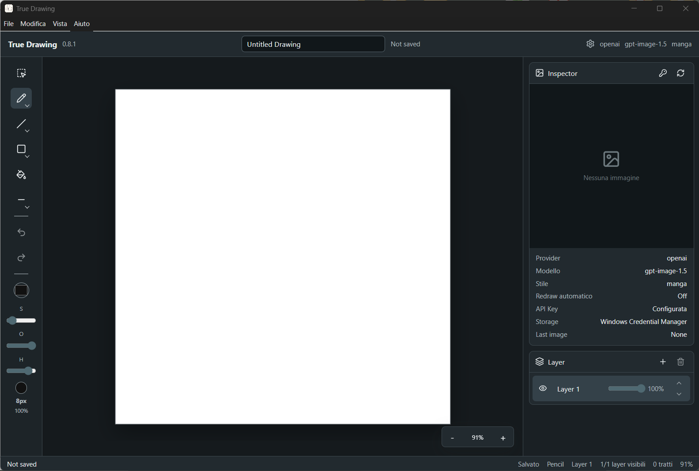
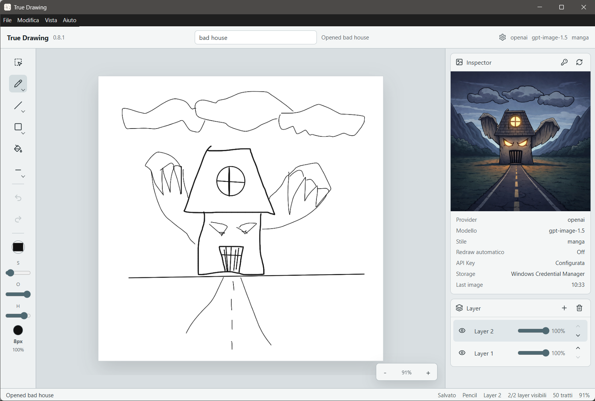

Version 1.0.0 for Windows and macOS
True Drawing
Draw a rough idea locally, then turn it into a polished image with your own OpenAI API key.
Local sketch files, autosave, recovery, and export stay on your computer.
Brushes, layers, fill, selection, undo/redo, and canvas zoom are ready to use.
Unsigned GitHub builds include SHA-256 checksums for verification.
Interface
A focused drawing workspace
The landing page uses the real application screenshots prepared for Italian and English, light and dark themes.





Release
Download True Drawing v1.0.0
Builds are distributed through GitHub for Windows and macOS. They are not signed or notarized, so SmartScreen or Gatekeeper may warn on first launch.